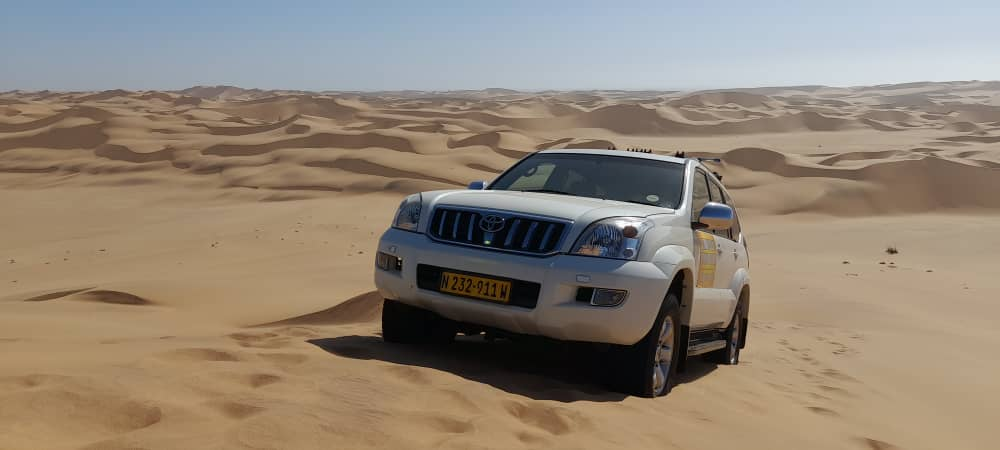
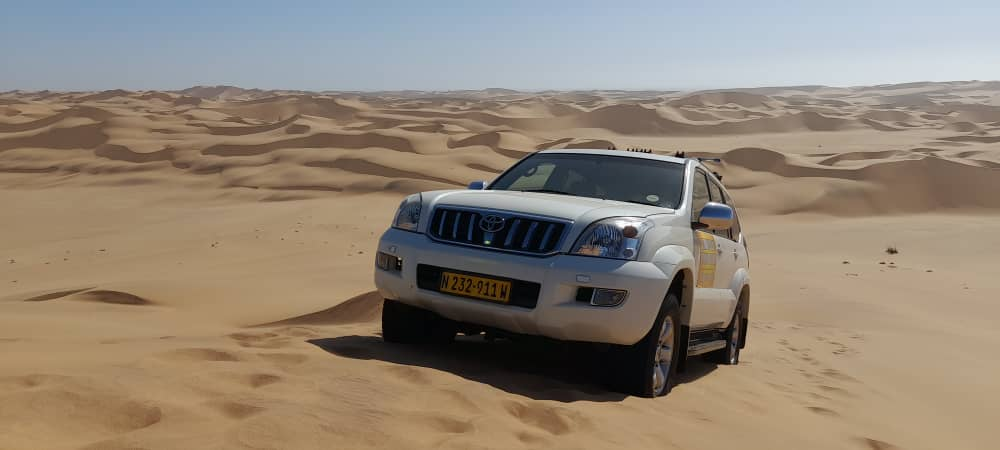

Are you looking for an adventure that will challenge your driving skills and thrill your senses? Do you want to experience the beauty and diversity of the Namib desert with your family and friends? If so, then you should join us at Dominus Dune Driving, the ultimate off-road experience in Namibia!
Dominus Dune Driving is a business that offers an off-road experience where you can bring your whole family along. You should bring your own 4x4 along and we will provide you with a professional off-road instructor, a scenic route through the thick sand dunes of the Namib desert and you will learn how to handle your 4x4 vehicle in these challenging conditions, while your children and family can enjoy the stunning views and wildlife of the desert.

Dominus Dune Driving is more than just a driving lesson. It is a fun social experience that will create lasting memories for you and your loved ones. You will meet other off-road enthusiasts, share stories and tips, and have a blast together. You will also have the opportunity to explore the desert on foot, take photos, and have a picnic in a shaded spot.
Dominus Dune Driving is the perfect way to spend a day in the Namib desert. Whether you are a beginner or an expert, you will find something to suit your level and interest. You will also benefit from the guidance and expertise of our friendly and qualified instructors, who will ensure your safety and satisfaction.
So, what are you waiting for? Book your off-road adventure today and discover the wonders of the Namib desert with Dominus Dune Driving! You can WhatsApp us at +264 81 633 5151 for more information and reservations. We look forward to seeing you soon!
What You Should Bring Along:
- A Permit to enter the Swakopmund-Walvis Bay Dune In The Dorob National Park (which is free to get from the Ministry of Environment, Forestry, and Tourism), or you can send us your vehicle registration number and we will arrange it on your behalf.
- Bring your own camping chairs, drinks, a beer if you want, sunscreen, hat, snacks, and picnic gear.
For more information and reservations, contact us via WhatsApp at +264 81 633 5151.
 
